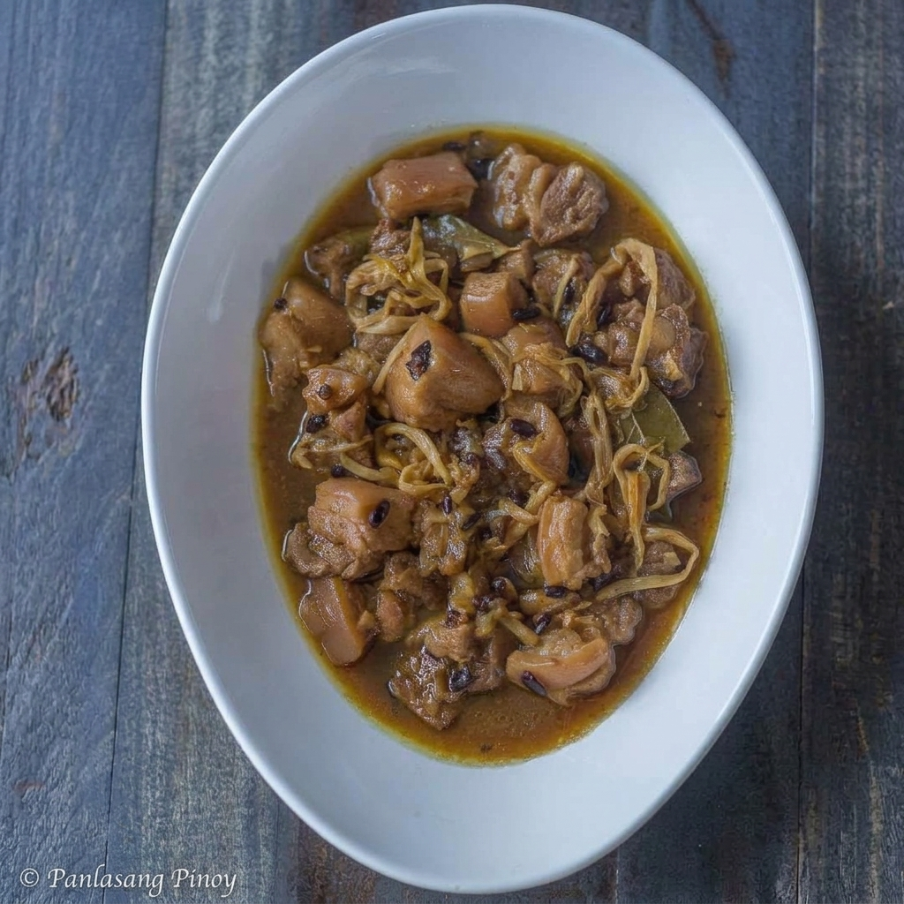

Pork Humba

Pork Humba is a traditional Filipino dish popular
in the Visayas. It is made with pork belly cooked
in soy sauce, vinegar, brown sugar, and spices.
It has a sweet and savory flavor.
Ingredients
1 kg pork belly
1/2 cup soy sauce
1/4 cup vinegar
1/4 cup brown sugar
5 cloves garlic
1 medium onion
2 bay leaves
1 teaspoon peppercorns
1 cup water
2 tablespoons cooking oil
Cooking Instructions
Cut the pork belly into serving pieces.
Heat oil in a pot and saute garlic and onion.
Add pork and cook until lightly browned.
Add soy sauce, vinegar, sugar, and spices.
Pour in water and bring to a boil.
Cover and simmer until the pork is tender.
Allow the sauce to thicken.
Serve hot with steamed rice.
Pork Humba Video Tutorial
VIDEO
Video by Panlasang Pinoy.
Back to Homepage